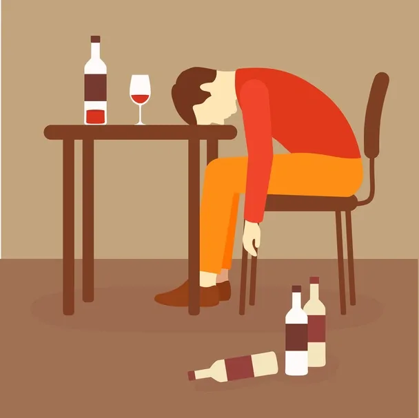

Alcohol addiction treatment overview by the psychiatrist in Delhi
Alcohol addiction treatment is a complicated and multifaceted manner that requires a comprehensive and individualized approach. Whether you’re in search of treatment for your self or assisting someone thru their healing, there are several essential points to preserve in mind:
1. Professional Guidance:
Seeking expert assist from healthcare providers like dependancy experts, psychiatrist and intellectual health professionals. They can examine the severity of the addiction, provide guidance on the most appropriate treatment approach, and display development.
2. Individualized Treatment Plans:
each individual’s journey to recovery is unique. Treatment plans should be tailored to individual needs, addressing physical, mental, and social aspects of the addiction.
3. Medical Detoxification:
In instances of intense alcohol dependancy, scientific detoxification can be essential to control withdrawal symptoms. This process must be conducted beneath the supervision of healthcare specialists to make sure safety.

1. Professional Guidance:
Seeking expert assist from healthcare providers like dependancy experts, psychiatrist and intellectual health professionals. They can examine the severity of the addiction, provide guidance on the most appropriate treatment approach, and display development.
2. Individualized Treatment Plans:
each individual’s journey to recovery is unique. Treatment plans should be tailored to individual needs, addressing physical, mental, and social aspects of the addiction.
3. Medical Detoxification:
In instances of intense alcohol dependancy, scientific detoxification can be essential to control withdrawal symptoms. This process must be conducted beneath the supervision of healthcare specialists to make sure safety.
4. Behavioral Therapy:
Behavioral therapy, consisting of Cognitive-Behavioral Therapy (CBT) or Motivational Enhancement Therapy (MET), is often effective in treating alcohol addiction. These cures help people perceive and alternate harmful behaviors, mind, and ideals related to alcohol use.
5. Inpatient or Outpatient Programs:
Consider the level of care needed, which may range from outpatient counseling to intensive inpatient rehabilitation. The choice depends on factors like the severity of addiction, co-occurring mental health conditions, and the individual’s support system.
6. Dual Diagnosis Treatment:
Address any co-occurring mental health disorders. Many individuals with alcohol addiction also have underlying mental health issues. Treating both conditions simultaneously is essential for a comprehensive and lasting recovery.
7. Family Involvement:
Involve family members in the treatment process. Family therapy can help repair relationships, improve communication, and create a supportive environment for recovery.
8. Support Groups:
Encourage participation in guide companies which includes Alcoholics Anonymous (AA) or SMART Recovery. These agencies offer a sense of network, shared reports, and ongoing assist, which is vital for retaining sobriety.
9. Relapse Prevention Strategies:
Develop relapse prevention strategies. Recognize triggers and stressors that may lead to relapse and create coping mechanisms to deal with them effectively.
10. Holistic Approaches:
Consider holistic approaches such as mindfulness, yoga, or meditation as complementary therapies. These practices can contribute to overall well-being and stress management.
11. Continuum of Care:
Understand that recovery is a lifelong process. A continuum of care, including aftercare programs and ongoing support, is vital to prevent relapse and promote sustained recovery.
12. Education and Awareness:
Educate people and their assist networks about the character of alcohol addiction, its results, and the significance of ongoing recovery efforts. Knowledge empowers people to make knowledgeable decisions and live dedicated to their recovery.
13. Addressing Underlying Issues:
Explore and address underlying issues contributing to alcohol addiction, such as trauma, unresolved grief, or interpersonal conflicts. Comprehensive treatment involves addressing the root causes of addiction.
14. Monitoring Mental Health:
Regularly monitor mental health and well-being. Emotional and psychological support during the treatment is a must.
15. Healthy Lifestyle Choices:
Promote a healthy lifestyle, consisting of workout, a balanced diet, and enough sleep. These factors make a contribution to normal properly-being and may aid inside the healing method.
16. Crisis Intervention Plan:
Develop a crisis intervention plan in case of emergencies or situations that may pose a risk to sobriety. Having a plan in place can help individuals navigate challenges effectively.
17. Cultural Sensitivity:
Be aware of and respect cultural differences. Cultural sensitivity in treatment can enhance engagement and outcomes.
18. Legal and Financial Considerations:
Address legal and financial issues related to alcohol use. This may involve legal assistance, financial counseling, or assistance with employment matters.
19. Patient Empowerment:
Individuals need to be empowered to take an energetic role of their restoration. Informed and stimulated people are much more likely to stay devoted to the remedy manner.
20. Patience and Understanding:
Recognize that the recovery journey may involve setbacks, and progress may occur at different rates for different individuals. Patience, understanding, and ongoing support are crucial elements of successful alcohol addiction treatment by psychiatrist in delhi.
In conclusion, alcohol dependency treatment is a multifaceted system that requires a comprehensive and individualized approach. Professional guidance, a supportive environment, and a commitment to ongoing care are key elements in the adventure closer to recovery.